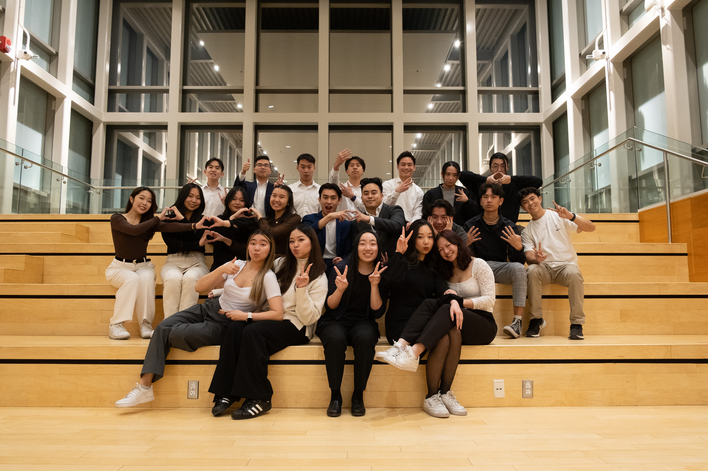
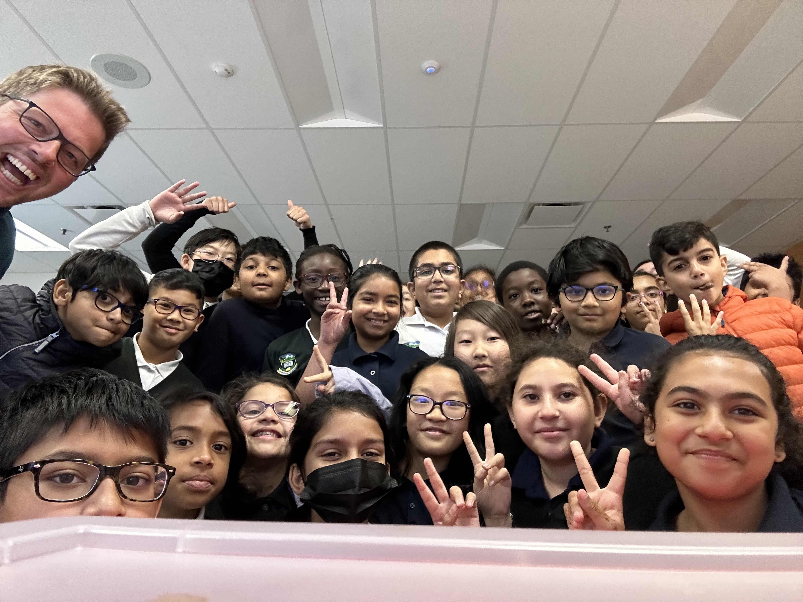

Volunteering
Take A Look At Everything I'm Volunteering For!
The Vietnamese Students' Association
November 2023 - Present
The Vietnamese Students' Association (VSA) is a student led club at the University of Calgary. Our mission is to foster a sense of community between Vietnamese students at the university and to provide them with a safe space to explore their connection to the culture. We host a few events every month, notably that of a Volleyball Tournament, Hoi Cho Tet, and Gala!
Within the club, I am currently a consultant! This means that I rotate between the various portfolios and aid other executives with their tasks. This ranges from things such as media creation and marketing to acquiring sponsorships and event planning!
So far, I've worked on the teams that have organized and managed major full day events such as the VSA Volleyball Tournament and Hoi Cho Tet. These are two of our biggest events, garnering over 300 and 1400 people, respectively. During our Hoi Cho Tet event, I worked as a liaison, showing around notable guests such as MLAs, MPs, the Mayor, and Senators. I specifically showed around Mayor Jyoti Gondek and MLA Peter Singh, and made sure that not only were they able to navigate the event, but they were also able to gain a better understanding of Vietnamese culture and traditions. It was a lovely experience meeting both of them, and I even got a photo with Peter Singh! In addition to these events, I've also worked on minor events such as a bakesale, movie night, and crafts night!
The GoldenZ Club
October 2023 - Present
Similar to the VSA, the GoldenZ Club is a student run club at the University of Calgary. This club works to empower women through service and advocacy. We are directly partnered with the Women's Centre of Calgary, and work hard to fundraise and support women in need. Events are held once a month, and aim to raise funds in order to create care packages that are later donated to the Women's Centre.
I currently serve as one of the Directors of External Affairs for the GoldenZ club. My job is to acquire sponsors for club events and to foster all communication between the club and companies outside of the University. So far, I've contacted over 20 companies to secure donations for our events and have been able to facilitate these events through the donations that I acquire.
Science FUNdamentals
September 2022 - Present
 Science FUNdamentals is a registered charity and student group that aims to enhance elementary science education through interactive demonstrations. Students are paired with elementary classrooms throughout the city and showcase monthly presentations that engage students and foster an interest in science.
There is a lot of freedom within this club to personalize how you want to present the demo kits, which means that there is a lot of room to take initiative and shape presentations to be exactly how you want them. Given this freedom, my partner and I have worked tirelessly to change the presentations in a way that we see fit. For many of the demos, we add extra slides to provide additional context to the content. I find that this really helps the students understand the content on a more fundamental level, so that they aren't just learning and forgetting the same day, but rather deeply understanding the material and remembering it later on. Furthermore, my partner and I put a significant amount of effort into making sure that we are facilitating a safe and welcoming environment where students feel comfortable enough to share their opinions and participate throughout the presentation.
It's an absolute blast presenting and the kids really enjoy these presentations because of their interactive nature! Some presentations that we've done so far are Weather, Strawberry DNA, and Electricity!
Stars for Scholarly Youth
September 2022 - Present
Stars for Scholarly Youth (SFSY) is a unique program whose mission is to bridge the gap between education and extracurricular opportunities for underserved Grade 5-12 youth. As a club we offer multiple programs, with our two most popular being the StarGATE Mentorship Program and the 1-on-1 Tutoring Program.
I've been a part of SFSY for two years now and have been a part for both the tutoring and mentorship program. Within the tutoring program, I worked 1-on-1 with a Grade 11 student in the subjects of Biology 20, Math 20, and English 20. Each week we would work on a lesson together and I would keep track of if they were able to understand the material that week. With this information, I would tailor the next lesson to really make sure that all of the content I was helping them with was what they wanted and needed to learn. Results were seen immediately and the student was able to visibly grow in confidence as our sessions went on. As for mentoring, mentoring is not about teaching a student, but rather being someone that they can talk to for any inquiries about school or life. My current mentee is a high school student who is hoping to pursue med school! It has been lovely being able to help them navigate and explore different pathways to medicine. In addition to this, being able to be there for someone in this way has felt truly impactful.
Ernest Morrow Middle School
March 2022 - Present
For the past 2 years, I've been working alongside the head coaches of Ernest Morrow Middle School to coach over 80 students in Grades 6, 7, 8, and 9. Working both independently and collaboratively, I've diligently worked to plan and manage drills that teach fundamental badminton skills such as footwork, drives, drop shots, and positioning.
I helped successfully lead the Grade 9 team to a first place victory against four other schools in 2023, in addition to also achieving first place victories in 2022 with the Grade 8 and 9 teams.
Forest Lawn High School
September 2021 - June 2022
During my Grade 12 year, I was the teaching assistant for over 60 students in 2 different classes, English 20 and Culinary 20. As a Culinary 20 TA, I worked with another student to prep materials for lessons. This mainly consisted of portioning ingredients, finding the correct tools, and setting up the work stations for the students to readily use. There was also a considerable amount of cleaning that I did as a Culinary TA.
During my time as an English 20 TA, I worked closely with the teacher to help facilitate classroom discussion and student participation. The class was largely centered around discussing the various texts of the course (Macbeth, The Great Gatsby, and The Crucible) and as such, it was very important that the students participated. While this was a large part of what I did, my main task was to work independently with the students on their individual skills. These skills included reading comprehension, annotating texts, and essay writing. Through the use of both one-on-one and group tutoring sessions, I was able to see a gradual increase in students' grades as the semester progressed and we worked more on their skills. It was incredibly rewarding to see the students gain confidence in their English skills and to see their grades increase.
Calgary Public Library
September 2016 - March 2020
The Calgary Public Library offers a multitude of drop in programs that strive to foster kids' curiosity in subjects such as math, reading, and coding. Each program runs multiple times a week, and often get 10-20 kids who are interested.
During my time as a Youth Volunteer, I dedicated over 150 hours to volunteering in programs such as Math Quest, Coding Buddies, and Reading Buddies.
- Math Quest - Implemented engaging and interactive math games, resulting in an increase in children's understanding of basic mathematical concepts
- Coding Buddies - Worked 1-on-1 with younger students through basic lessons on coding and other essential computer skills resulting in a boost of confidence in their ability to create basic code
- Reading Buddies - Provided support and encouragement of reading through various exciting literary activities